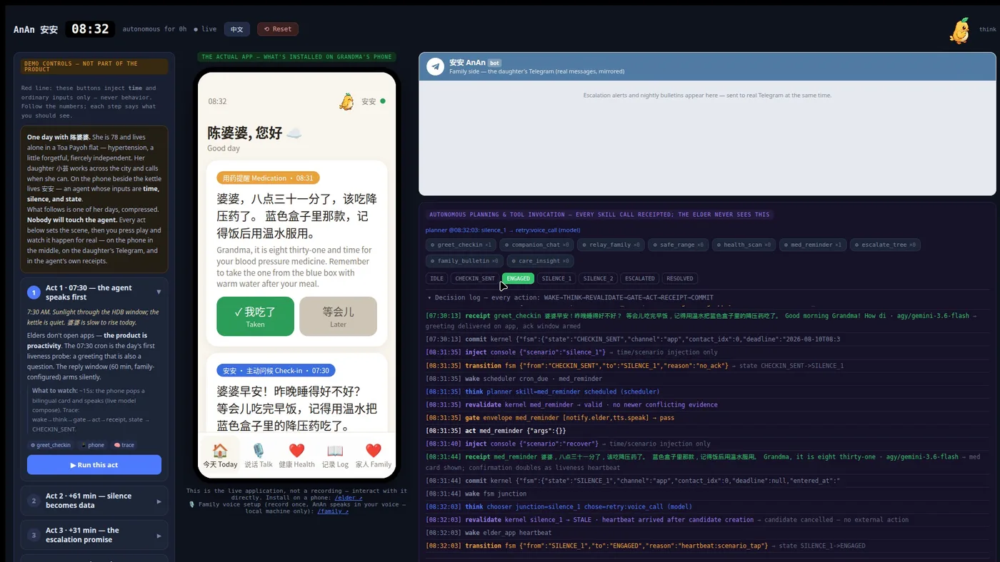
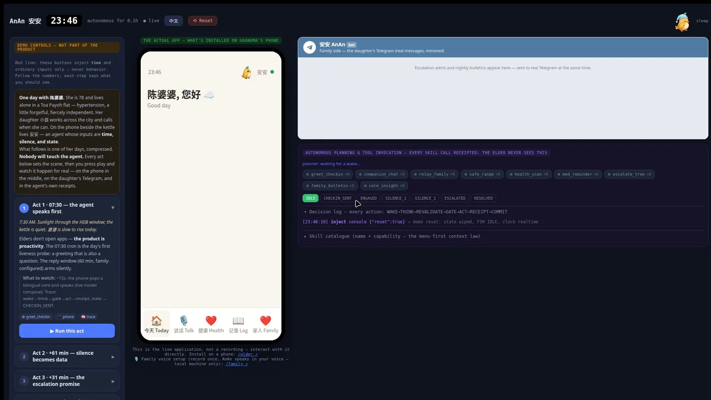
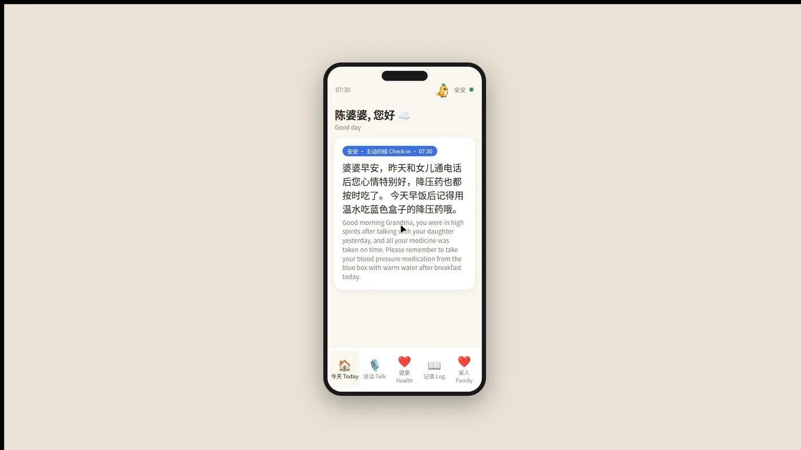

Tencent Age Well Social Good Challenge · Singapore
安安 AnAn
Silence is an input.
An autonomous care companion for a senior living alone. Not a chatbot waiting to be spoken to — an agent for whom nothing happening is itself the signal. When the morning check-in goes unanswered, it decides, escalates, and leaves a receipt for every step.
01 — the problem
A fall is not the emergency. The four hours after it are.
Singapore is ageing faster than almost anywhere on earth, and the sharpest risk for a senior living alone is not a dramatic event. It is an ordinary morning where nobody notices that nothing happened.
Every consumer answer to this is reactive: a button she has to press, an app she has to open, a call she has to make. Each assumes she is able to act at the exact moment she is least able to.
So the design inverted the trigger. AnAn does not wait to be addressed. It holds a model of the day — medication at 08:00, a check-in at 07:30, a bulletin to family at 20:05 — and treats a missing response as evidence, not as nothing.
What that buys is time. The escalation tree starts walking while she still only needs a neighbour, not an ambulance.
02 — architecture
Seven phases. Every one writes a receipt before the next may begin.
Waking is not thinking, and thinking is not acting. The separation is the product: it is what makes the agent's autonomy auditable rather than asserted.
- 01WAKE
唤醒
A trigger arrives — a cron, a silence deadline, a tap, a Telegram reply. It is only an opportunity to inspect the world, never a command.
- 02THINK
思考
The model chooses inside a bounded envelope. If it fails or takes too long, a deterministic floor decides instead — the loop never stalls on a provider.
- 03REVALIDATE
复核
A decision born from an old snapshot re-checks the world. A heartbeat that raced in kills the stale decision before anything external happens.
- 04GATE
闸门
Three tiers: autonomous, family-approval, never. Emergency calls, medical advice and anything financial are hard-wired to never. This phase is allowed to refuse.
- 05ACT
行动
The skill runs. Words are generated at the moment of speaking, never read from a script.
- 06RECEIPT
收据
What actually changed is recorded — delivery surface, message id, real effect. Never just a return code.
- 07COMMIT
落账
State commits. The judge of this decision is the receipt row, not the narration.

tap to open full size ↗The silence FSM
Six states with windows in config, not code. CHECKIN_SENT → SILENCE_1 → SILENCE_2 → ESCALATING. A family can retune the patience without a deploy.
The contact tree
Daughter, then son, then neighbour — each hop an idempotent escalation id, each delivery its own receipt. Answering anywhere collapses the whole tree.
On-device screening
MediaPipe in WASM: rPPG heart rate, pose mobility, FAST facial symmetry. Only the score leaves the phone. Not one frame does.
03 — the surfaces
Three people, three screens, one agent.

tap to open full size ↗
Six of the ten states, running live — the same four-frame renderer the app ships, not a picture of one. She reads the bird before she reads the words, so alert beats faster than idle. That difference is the interface.
04 — the journey
Built vocabulary-first, then refused most of it.
-
93 words before a line of code
What an ageing Singapore actually needs, scattered across three poles: what a family can already do, what a device can already do, and what only an agent can. We built only the third cluster. If a behaviour could not be named inside that polygon, it was not built.
-
Nine skills, and the three refusals
Each skill answers one named failure: silence, isolation, medication, wandering, invisible decline. We deliberately refused fall-detection hardware, medical advice, and dialling emergency services — a demo must not pretend it can.
-
The kernel, because a demo lies easily
Anything can look autonomous for ninety seconds. Seven receipt rows per decision is what makes it checkable afterwards — including the decisions the gate refused.
-
Degrade by declaration, never by silence
The full build wants a GPU: cloned family voices, local Whisper, a Gemini brain. The public demo runs on a free instance with none of it. Every lane announces what it can actually do at boot. What was cut is texture — the kernel and the receipts are identical.
05 — see it
Everything, in one place.
Stack Python · FastAPI · SQLite · React · MediaPipe (WASM) · SEA-LION · Qwen3-TTS · MapLibre GL · OneMap SG · Telegram Bot API · Docker · Render
← Back to all projects